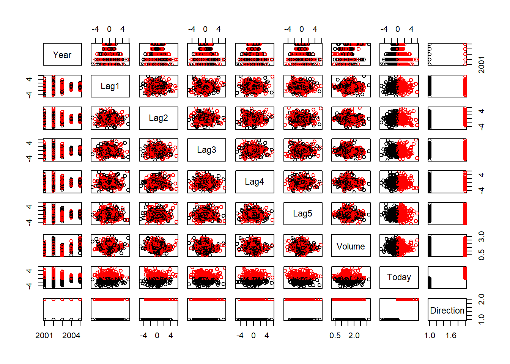
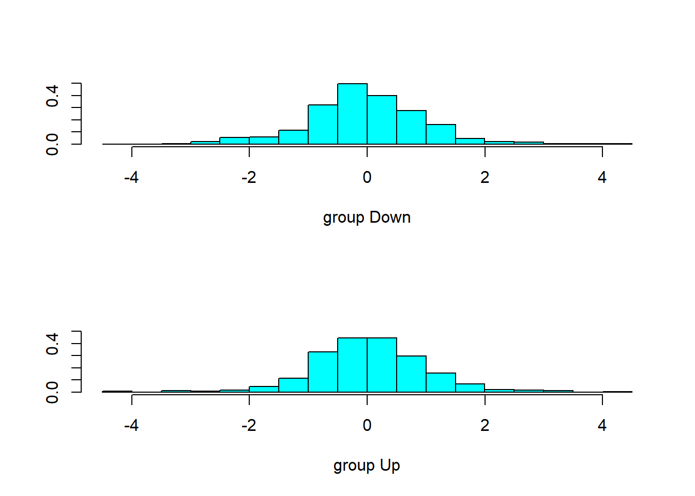

For this example, we use the Smarket stock market data from the ISLR package. As usual, lets load the library, data, and call a few common commands to get familiar with the data
library(ISLR)
data(Smarket)?Smarkethead(Smarket)## Year Lag1 Lag2 Lag3 Lag4 Lag5 Volume Today Direction
## 1 2001 0.381 -0.192 -2.624 -1.055 5.010 1.1913 0.959 Up
## 2 2001 0.959 0.381 -0.192 -2.624 -1.055 1.2965 1.032 Up
## 3 2001 1.032 0.959 0.381 -0.192 -2.624 1.4112 -0.623 Down
## 4 2001 -0.623 1.032 0.959 0.381 -0.192 1.2760 0.614 Up
## 5 2001 0.614 -0.623 1.032 0.959 0.381 1.2057 0.213 Up
## 6 2001 0.213 0.614 -0.623 1.032 0.959 1.3491 1.392 UpLets make a plot with the pairs function.
pairs(Smarket, col = Smarket$Direction)
Since we are interested in classification, we will use the glm function on the specified model in a similar fashion to regression. However, lets set the family argument to “binomial” to run the logistic regression.
smarket_logistic <- glm(Direction ~ Lag1 + Lag2 + Lag3 + Lag4 + Lag5 + Volume,
data = Smarket, family = binomial)
summary(smarket_logistic)##
## Call:
## glm(formula = Direction ~ Lag1 + Lag2 + Lag3 + Lag4 + Lag5 +
## Volume, family = binomial, data = Smarket)
##
## Deviance Residuals:
## Min 1Q Median 3Q Max
## -1.446 -1.203 1.065 1.145 1.326
##
## Coefficients:
## Estimate Std. Error z value Pr(>|z|)
## (Intercept) -0.126000 0.240736 -0.523 0.601
## Lag1 -0.073074 0.050167 -1.457 0.145
## Lag2 -0.042301 0.050086 -0.845 0.398
## Lag3 0.011085 0.049939 0.222 0.824
## Lag4 0.009359 0.049974 0.187 0.851
## Lag5 0.010313 0.049511 0.208 0.835
## Volume 0.135441 0.158360 0.855 0.392
##
## (Dispersion parameter for binomial family taken to be 1)
##
## Null deviance: 1731.2 on 1249 degrees of freedom
## Residual deviance: 1727.6 on 1243 degrees of freedom
## AIC: 1741.6
##
## Number of Fisher Scoring iterations: 3Next, lets pass the smarket_logistic model to the predict function, and define the argument type as response. This will turn give us a vector of probabilities. We can view the first 5 and we see that basically, its about a 50/50 chance of
logistic_probs <- predict(smarket_logistic, type = "response")
logistic_probs[1:5]## 1 2 3 4 5
## 0.5070841 0.4814679 0.4811388 0.5152224 0.5107812We can turn these probabilities into classification by setting a threshold at 0.50 or 50%. the ifelse function is helpful for performing the classification and the table function for displaying the results.
logistic_pred <- ifelse(logistic_probs > 0.5, "Up", "Down")
table(logistic_pred, Smarket$Direction)##
## logistic_pred Down Up
## Down 145 141
## Up 457 507mean(logistic_pred==Smarket$Direction)## [1] 0.5216While that was interesting, we used all the data available so we’ve probably over-fit the model. Lets subset the data to train the logistic_probs model on the data prior to 2005, and then run then test it on the data after 2005. We can do this be creating a logical index to identify values prior to 2005, and then use that index to subset the Smarket data.frame. Note, the glm function has a subset argument which you can use to directly pass the index to.
train <- Smarket$Year < 2005
smarket_logistic <- glm(Direction ~ Lag1 + Lag2 + Lag3 + Lag4 + Lag5 + Volume,
data = Smarket, family = binomial, subset = train)The predict function does not have the subset argument, so one must the ! logical negation operator within the Smarket data.frame extraction brackets to indicate an interest in returning values which are the opposite of the index provided. In other words, use the logistic_probs model to make predictions on data after 2005.
logistic_probs <- predict(smarket_logistic, newdata = Smarket[!train,], type="response")Finally, classify probabilities as either “Up” and “Down” and call the table function to create a confusion matrix as well as the mean function.
logistic_pred <- ifelse(logistic_probs > 0.5, "Up", "Down")
Direction_2005 <- Smarket$Direction[!train]
table(logistic_pred, Direction_2005)## Direction_2005
## logistic_pred Down Up
## Down 77 97
## Up 34 44 mean(logistic_pred == Direction_2005)## [1] 0.4801587Repeat the process with just Lag1 and Lag2 variables.
smarket_logistic <- glm(Direction~Lag1+Lag2, data=Smarket, family=binomial, subset=train)
logistic_probs <- predict(smarket_logistic, newdata=Smarket[!train, ], type = "response")
logistic_pred <- ifelse(logistic_probs > 0.5, "Up", "Down")mean(logistic_pred == Direction_2005)## [1] 0.5595238class_table <- table(logistic_pred, Direction_2005)
class_table## Direction_2005
## logistic_pred Down Up
## Down 35 35
## Up 76 106class_table[4]/sum(class_table[2,])## [1] 0.5824176predict(smarket_logistic, newdata=data.frame(Lag1=c(1.2,1.5), Lag2=c(1.1,-0.8)), type="response")## 1 2
## 0.4791462 0.4960939Lets load Ripley’s MASS package
library(MASS)
data(Smarket)Again, we are going to try and predict the Smarket data by using the returns of the last two days on all data prior to 2005.
train <- Smarket$Year < 2005
lda_Smarket <- lda(Direction ~ Lag1 + Lag2, data = Smarket, subset = train)
lda_Smarket## Call:
## lda(Direction ~ Lag1 + Lag2, data = Smarket, subset = train)
##
## Prior probabilities of groups:
## Down Up
## 0.491984 0.508016
##
## Group means:
## Lag1 Lag2
## Down 0.04279022 0.03389409
## Up -0.03954635 -0.03132544
##
## Coefficients of linear discriminants:
## LD1
## Lag1 -0.6420190
## Lag2 -0.5135293plot(lda_Smarket)
So lets see how we predict on year 2005 and the first 5 items of the prediction.
Smarket2005 <- subset(Smarket, Year==2005)
lda_pred <- predict(lda_Smarket, Smarket2005)
class(lda_pred)## [1] "list"data.frame(lda_pred)[1:5,]## class posterior.Down posterior.Up LD1
## 999 Up 0.4901792 0.5098208 0.08293096
## 1000 Up 0.4792185 0.5207815 0.59114102
## 1001 Up 0.4668185 0.5331815 1.16723063
## 1002 Up 0.4740011 0.5259989 0.83335022
## 1003 Up 0.4927877 0.5072123 -0.03792892We are interested in the class column, which is short for classification so lets create a confusion matrix with that. Linear Discriminant Analysis gives us a little bit better results than the logistic regression.
table(lda_pred$class, Smarket2005$Direction)##
## Down Up
## Down 35 35
## Up 76 106mean(lda_pred$class==Smarket2005$Direction)## [1] 0.5595238And QDA performs both LDA, and logistic regression.
qda.fit <- qda(Direction ~ Lag1 + Lag2, data = Smarket, subset = train)
qda.fit## Call:
## qda(Direction ~ Lag1 + Lag2, data = Smarket, subset = train)
##
## Prior probabilities of groups:
## Down Up
## 0.491984 0.508016
##
## Group means:
## Lag1 Lag2
## Down 0.04279022 0.03389409
## Up -0.03954635 -0.03132544qda.class <- predict(qda.fit, Smarket2005)$class
table(qda.class, Direction_2005)## Direction_2005
## qda.class Down Up
## Down 30 20
## Up 81 121mean(qda.class==Direction_2005)## [1] 0.5992063A simple, but very effective classifcation tool, we are going to use the class package to run k-nearest neighbors on the Smarket data.
library(class)As usual, check out the documentation.
?knnFirst, lets create a matrix, Xlag of the first and second lags of the Smarket returns and also define our train set. Pass them both to the knn function setting the k as 3 for the number of neighbors considered.
Xlag <- cbind(Smarket$Lag1, Smarket$Lag2)
train <- Smarket$Year < 2005
knn_pred <- knn(train = Xlag[train,], test = Xlag[!train,],
cl = Smarket$Direction[train], k = 3)Produce the confusion Matrix.
table(knn_pred, Smarket$Direction[!train])##
## knn_pred Down Up
## Down 48 56
## Up 63 85mean(knn_pred == Smarket$Direction[!train])## [1] 0.5277778